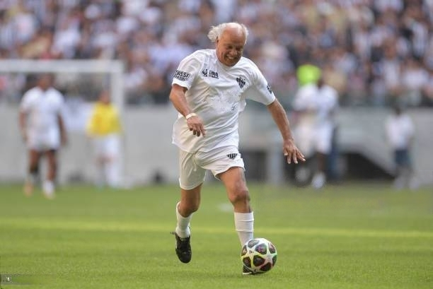

Reinaldo
José Reinaldo (conhecido apenas como Reinaldo), atuou pelo
Galo
nos anos de 1973 a 1985.
Títulos pelo
Galo
:
Taça Minas Gerais: 1975 e 1976
Campeonato Mineiro: 1976, 1978, 1979, 1980, 1981, 1982, 1983 e 1985
Voltar